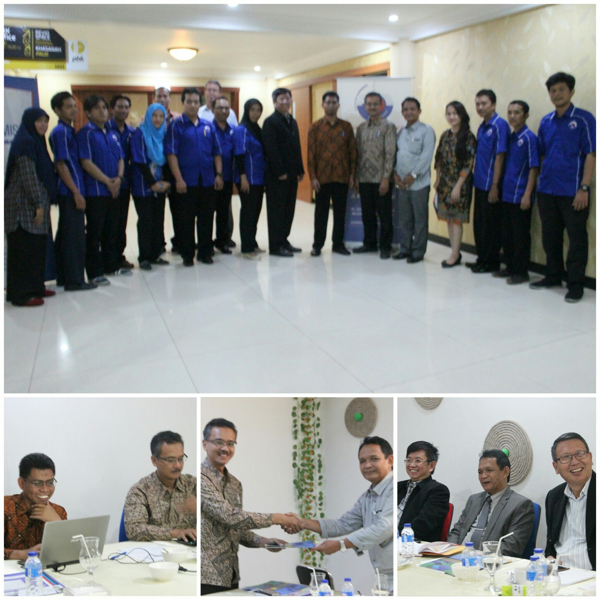

Kegiatan Kampus
Arsip Berita 2017
Baca Selengkapnya
chevron_right
Kegiatan Visitasi Tim Asesor BAN-PT di Kampus Politeknik Surabaya
Politeknik Surabaya Dharma Bakti menyambut visitasi asesor BAN-PT Prof Dr Mahfud Solihin dari UGM Jogjakarta dan Ir Suharyadi Pancono MT dari Politeknik Manufaktur Bandung pada Kamis (07/09/2017).